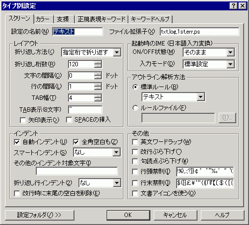

タイプ別設定 『スクリーン』プロパティ
『スクリーン』 『カラー』 『ウィンドウ』 『支援』 『正規表現キーワード』 『キーワードヘルプ』

設定の名前 … 現在設定中のタイプに対する名前を変更できます。
ファイル拡張子 … 現在設定中のタイプに対応するファイル拡張子を列挙します。
（ドット）は付けないでください。複数指定する場合はカンマで区切って下さい。 (例) c,cpp,h
アウトプットウィンドウのタイプ別設定を拡張子「output」として指定できます。(例) cs,output
<レイアウト>
折り返し方法 … 折り返し方法を指定します。(関連：『設定』メニュー
折り返し方法)
折り返し桁数 … タイプ別の標準となる折り返し桁数を設定します。10〜10240までの桁数を指定できます。
文字の間隔 … 文字と文字の隙間をドット単位で指定します。
行の間隔 … 行と行の隙間をドット単位で指定します。
TAB幅 … TAB記号を展開する桁数を 1〜64から選択します。
TAB表示(8文字) … 『カラー』プロパティでTABの色分け表示をONにしたとき、TABの表示に使う文字列を半角のみ8文字以内で設定します。9文字目以降は設定にかかわらず、スペースが表示されます。
□
矢印表示 … TABの表示に、文字列の代わりに矢印(半角幅の→)を作画します。
□
SPACEの挿入 … TABを入力する代わりに、半角スペースを入力します。
<インデント>
■
自動インデント
有効にすると、自動（オート）インデントモードになります。
自動インデントモードでは、[Enter] キーなどで改行を入力したときに、前の行の先頭にある空白やTABのある余白部分を、そのまま引き継ぎます。
「その他のインデント対象文字」で指定した文字でもインデントします。
■
全角空白も
自動インデントにしたとき、全角空白でもインデントします。
さらに行頭移動時には、TAB・半角空白に加えて全角空白もインデント文字として取り扱います。
スマートインデント
対応する {, } に合わせてインデントまたは逆インデントします。
今のところC/C++用しか用意されていません。(
スマートインデントの仕様)
スマートインデントプラグインをインストールすることでインデント方法を追加できます。(sakura:2.0.0.0以降)
その他のインデント対象文字
空白(SP)とTAB以外の文字もインデント対象にしたい場合ここに列挙します。
文字はカンマなどで区切らずにそのまま列挙して下さい。 (例) □■○●
折り返し行インデント
折り返された行のレイアウト上の行頭位置をインデント表示するための設定です。
・なし
折り返し行は必ず1桁目から表示されます。
例:
[Tab][Tab] 折り返されて表示された行は
このように1行目に合わせて表示します。
・tx2x
1行目の中でタブが最後に現れた次の文字に合わせてインデント表示します。スペースは文字扱いになります。3行目以降は2行目の位置に合わせられます。
例:
[Tab][Tab]折り返されて表示された行は
[Tab][Tab]このように1行目に合わせて表示します。
・論理行先頭
タブ・半角スペース以外の文字がはじめに現れた位置に合わせてインデント表示します。3行目以降は2行目の位置に合わせられます。プログラムなどに向いています。
オートインデントと同じように、設定によって、「全角空白」と「その他のインデント対象文字」もインデント対象になります。(sakura:1.3.x.x以降?)
例:
[Tab][Tab]折り返されて表示された行は
[Tab][Tab]このように1行目に合わせて表示します。
改行時に末尾の空白を削除
改行時に末尾の空白がある場合に、空白を削除してから改行します。(sakura:1.5.8.0以降)
<アウトライン解析方法>
アウトライン解析方法を選択します。
アウトライン解析を実行したときに、アウトライン解析ダイアログに表示される内容は、ここで選択した内容によって異なります。
◎
標準ルール
・C/C++
拡張子が".c"の場合は、「C言語関数一覧」が表示されます。
拡張子が".c"以外の場合は、「C++メソッドツリー」が表示されます。
・テキスト
テキストトピックに使用する「見出し記号」は、「
共通設定 『書式』プロパティ」の「見出し記号」で、ある程度カスタマイズすることができます。
・そのほか PL/SQL,JAVA,COBOL,Perl,アセンブラ,Python,Visual Basic,WZ階層つきテキスト,HTML,TeX があります。
・アウトライン解析プラグインをインストールすることで解析方法を追加できます。(sakura:2.0.0.0以降)
○
ルールファイル
ルールファイルを使うと「テキスト トピックツリー」の「見出し記号」よりも細かくカスタマイズすることができます。
ルールファイルには、「見出し文字列」と「グループ名」を、「 /// 」(前後の半角スペースもセパレータの一部)で区切って記述します。
最終行にも改行が必要です。
ファイル名が相対パスの場合、設定フォルダからの相対パスとして開きます。
ルールファイルの解析方法
行の先頭のTAB・SP・全角空白を除いて、行頭に「見出し文字列」が現れたら、アウトラインに該当行を追加します。
大文字小文字は区別されます。
グループ名が同じ行がアウトライン上で連続する場合は見出し文字列が異なっていても同じ階層で表示されます。
グループ名が異なる場合はその時点でのアウトラインツリーの親と同じグループ名であれば、その親と同じレベルとして追加されます。
反対に親要素にない新しいグループ名であれば、子としてツリーに追加されます。
階層構造のレベルを固定する方法などはありません。
例1："■"が行頭にある行のみ表示
■ /// 見出し
例2：svn diff
Index: /// index
--- /// ファイル名
+++ /// ファイル名
@@ /// 行番号
- /// 変更行
+ /// 変更行
<禁則処理>
□
英文ワードラップ
英文ワードラップを有効にするかどうかを指定できます。
□
改行ぶら下げ
折り返した後の行が改行だけになって見づらくなることを防ぎます。
□ぶら下げを隠す (2.0.6.0 以降)
折り返しの右側に句読点と改行のマージンを取らないようにします。
□
句読点ぶら下げ(、。，．､｡,.)
句読点ぶら下げに指定された文字を行末(折り返し位置の右側)にぶら下げます。
同じ文字が「行頭禁則」文字にも含まれているときは、ぶら下げの指定が優先されます。
□
行頭禁則
行頭禁則に指定された文字が禁則をしないと行頭になるとき、1文字前を含めて次行に折り返します。
ただし、1文字前も行頭禁則文字なら何もしません。
□
行末禁則
行末禁則に指定された文字を、次行に折り返します。
□
文書アイコンを使う
エディタのアイコンを文書に関連づけられたもの(フォルダで表示されるもの)に変更します。
[設定フォルダ]
設定フォルダボタンは、ユーザー別設定を行っている場合のみ表示されます。